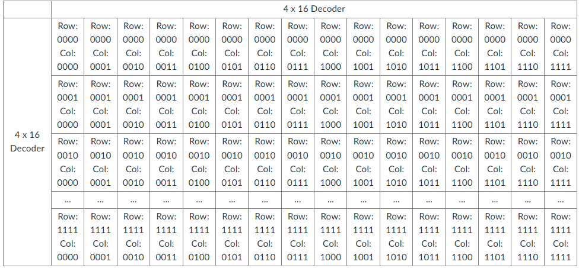
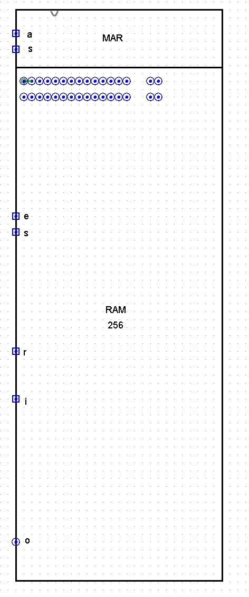

The RAM Matrix
Sections 8.4 – 8.7 | Estimated time: ~0.8 hours reading, ~2 hours building
8.4 An address is two numbers
Page 1 left you with a byte that answers only when its h and v are both high. This page supplies those two lines, for every byte at once, from one 8-bit number.
Split the address down the middle. The high four bits pick a row; the low four bits pick a column. Sixteen rows times sixteen columns is 256 places, and the byte at row r, column c is byte number 16r + c — which is simply the address read as one number.

| Address | High nibble → row → h | Low nibble → column → v | Byte |
|---|---|---|---|
0000 0101 | 0 | 5 | 5 |
0001 1011 | 1 | 11 | 27 |
0010 1100 | 2 | 12 | 44 — an address your RAM can name but does not have (§8.7) |
8.5 Why two decoders
You could decode all eight bits at once. An 8×256 decoder is the same construction as your 4×16 one, extended: 256 AND gates of 8 inputs each, one per byte. Nothing wrong with it except its size.
Two 4×16 decoders do the same job with 32 four-input AND gates between them. But count honestly: every byte then needs one more two-input AND to combine its row line and its column line — the h AND v gate you put in RAM_BYTE on page 1. At full size that is 256 extra gates, and they belong in the comparison:
| For all 256 bytes | one 8×256 decoder | two 4×16 decoders |
|---|---|---|
| Loading the comparison… | ||
Counted fairly, two decoders still win by more than three to one in gate inputs. But the bigger difference is the last row. One decoder sends 256 separate select lines out into the memory; two decoders send 32, running as a grid, with each byte sitting where one row line crosses one column line. On a real chip every one of those lines has to be routed somewhere and takes area of its own, and wiring, as much as gate count, is why memory is built two-dimensionally.
Week 3 asked you for a DECODER_4TO16, built by extending the pattern rather than by cascading two 3×8s, and said two of them would address the rows and columns of RAM. This is that. You place two instances of the tab you already have. You do not build a decoder this week.
8.6 The MAR, and a bus that really is one
The Memory Address Register is the simpler component
The decoders need an address to hold still while the RAM reads or writes. That is a job for storage, so the address goes into a register first: the Memory Address Register, or MAR. Its set line is called sa — “set address”.
Your MAR is a MEM_8BIT, not a REGISTER_8BIT. It has no enable and no output buffers, and that is correct. Week 5 split two ideas apart: holding a value (MEM_8BIT) and putting it on a shared wire (the enable stage). The MAR's output goes to two decoders and nowhere else. It never shares a wire with anything, so it never needs to stop driving — it needs only the first half. This is the first place in the course where you use one without the other, and it is a good test of whether the Week 5 split made sense.
This one is a bus
This one is a bus. Thirty-two bytes share one output line, and each of them can stop driving — that is what their buffers are for. The ALU’s seven legs were combined differently, with OR gates, and Weeks 6 and 7 were careful to say that was not a bus. Here the outputs really do share one wire, and an unselected byte drives nothing.
Why not OR them, the way the ALU does? The decoders guarantee at most one byte is selected, so inside the RAM an OR would work — at 32 inputs per bit. But the RAM’s o will later join your CPU’s bus, where the registers also drive, and there it must be able to let go. The buffer has to be at the edge regardless, and once it is, one shared line inside is the simpler circuit.
The rule from Week 6 still decides it: where one driver is guaranteed structurally, OR is cheaper; where it is not, pay for the buffer. The ALU output and the RAM output come out on opposite sides of that rule, and now you have seen both.
Between the shared line and the o pin goes one more 8-bit controlled buffer, controlled by e. Like the one inside each byte, it changes nothing on paper — every byte behind it already floats unless selected and enabled. It is part of the RAM as Dave built and ran it in Logisim 2.7.1, and it stays — the same decision as the ninth buffer in your register. That is a description of what has worked in this simulator, not a claim about why.
8.7 256 by design, 32 by construction
Your RAM is designed for 256 bytes. You will build 32 of them — rows 0 and 1, sixteen bytes each. With the full matrix wired, Logisim 2.7.1 becomes too slow to use, and 32 bytes is enough to run real programs on the CPU you finish in Week 17.
That is not a shortcut to hide. It is the ordinary state of real computers: the address space a processor can name is almost always larger than the memory actually installed. Your 8-bit MAR can name 256 bytes; 32 answer. Row decoder outputs 2 through 15 connect to nothing. Put 00100101 in the MAR and raise e, and no byte is selected, so nothing drives o — a probe shows xxxxxxxx. That is not 00000000: no byte is driving the line at all. Pulse s at that address and the write goes nowhere.
The interface — tab RAM_16X16
| Pin | Width | Direction | Meaning |
|---|---|---|---|
address | 8 | in | the address, into the MAR |
sa | 1 | in | MAR set — while high, the MAR follows address |
i | 8 | in | data in, to every byte |
s | 1 | in | write, to every byte |
e | 1 | in | read, to every byte |
reset | 1 | in | broadcast write, to every byte |
o | 8 | out | the selected byte, or floating |
Set sa, s, e and reset to pull-down.
The wiring, in five steps
-
The MAR.
One instance of your
MEM_8BIT:addressinto itsi,sainto itss. Put a splitter on its output. -
Two instances of your
DECODER_4TO16.Bits 7–4 to the row decoder, bits 3–0 to the column decoder. Get this backwards and most addresses land on rows you never built:
00000101would select row 5, which has no bytes, and step 3 of the verification table fails. -
Thirty-two instances of
RAM_BYTE, in two rows of sixteen.Row decoder output 0 to every
hin row 0; output 1 to everyhin row 1; outputs 2–15 to nothing. Column decoder output k to thevof both bytes in column k. Build one row, check it, then copy the whole row and paste it below. -
The shared lines.
i,s,eandresetgo to all 32 bytes. Every byte’sojoins one shared 8-bit line. Tunnels namedi,s,e,resetandbuswill keep the canvas readable. -
The output buffer.
One 8-bit controlled buffer from the shared line to the
opin, controlled bye.
![A Logisim circuit showing four RAM bytes arranged in two rows and two columns. On the left, an address pin feeds a CPU MEM 8 block set by a pin labelled sa; its output is split into two 4-bit groups. One group drives a 4 by 16 decoder on the left whose outputs run horizontally to the bytes' h pins; the other drives a 4 by 16 decoder at the top whose outputs run vertically to the bytes' v pins. Shared i, reset, s and e lines run to all four bytes, and their o outputs join a shared line that passes through a controlled buffer to the o pin. One byte's monitor reads 00000000 and the other three read EEEEEEEE.](images/cpu-ram-4byte-wiring.jpg)
EEEEEEEE — they have never been written.
mem out to the edge — optional, and useful.One timing rule
s is highThe MAR is a latch. While sa is high, the decoders see each new address the moment it arrives — and if s is high at the same time, the byte under each new address gets written too. The order is always: set the address, release sa, then pulse s. It is Week 5’s rule about nesting one pulse inside another, applied to addressing. The bench below can break this on purpose.
Verify before you submit
s, e, sa and reset start at 0. “Pulse” means 0 → 1 → 0. Screenshot each step.
| # | Do | Expect |
|---|---|---|
| 1 | Nothing yet — a fresh circuit | every byte’s mem shows EEEEEEEE. Correct: Week 5’s E state, 32 times |
| 2 | i = 00000000, pulse reset | all 32 mem show 00000000 |
| 3 | address = 00000101, pulse sa; i = 00111100, pulse s | byte 5 = 00111100; nothing else changes |
| 4 | address = 00011011, pulse sa; i = 10100101, pulse s | byte 27 = 10100101 |
| 5 | address = 00000101, pulse sa; e = 1 | o = 00111100 |
| 6 | address = 00011011, pulse sa | o = 10100101 |
| 7 | address = 00010101, pulse sa | o = 00000000 — byte 21: same column as byte 5, other row |
| 8 | address = 00001011, pulse sa | o = 00000000 — byte 11: same column as byte 27, other row |
| 9 | address = 00100101, pulse sa | o = xxxxxxxx — row 2 is not populated; nothing drives |
| 10 | e = 0 | o = xxxxxxxx |
Steps 7 and 8 are the ones that catch mistakes. A byte in the right column but the wrong row must not answer. If yours does, a byte is taking its select from v alone, or the two nibbles are swapped.
Where you are
With Checkpoint 3 wired, your machine has somewhere to put things: 32 bytes, each reachable by an 8-bit number. The next two pages are the software that uses it — and page 3 ends by tracing one MIPS instruction through the circuit you just built.